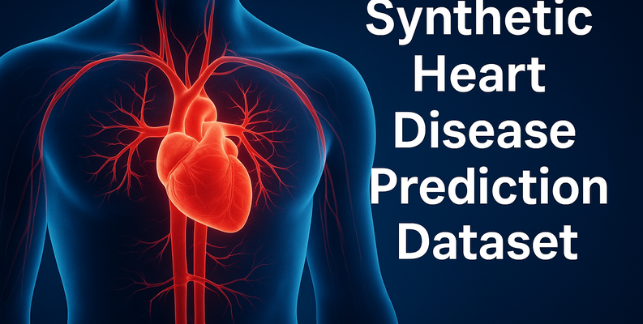

Explore Data
Work with a synthetic heart disease dataset using Python data tools.
MACHINE LEARNING · DATA SCIENCE
An educational project exploring synthetic heart disease data, Python-based data processing, and machine learning workflows.
Built by Hemanta Kandel

01 — OVERVIEW
This project brings together synthetic data, machine learning tools, and web development to demonstrate a practical data science workflow. It explores how datasets can be prepared and used in classification experiments, with a Flask application providing the web interface.
Work with a synthetic heart disease dataset using Python data tools.
Explore machine learning workflows with scikit-learn and XGBoost.
Use Flask, HTML, and CSS to present project information in a browser.
02 — TOOLKIT
Tools used to explore data, develop machine learning workflows, and build the application.
03 — MY DEVELOPMENT JOURNEY
Dataset preparation
Working with structured data and preparing it for analysis.
Machine learning
Exploring model training and classification techniques.
Web development
Connecting Python application logic with an HTML and CSS interface.
Documentation and deployment
Making the project easier to understand, run, and explore.
This project is part of my learning journey in data science and web development. It helps me practice combining multiple Python libraries into one organized project.
04 — DATASET
The repository includes a synthetic heart disease CSV dataset. Visit GitHub to inspect the data, source code, and project documentation.
Download CSV Dataset ↓Educational use only. Synthetic data and machine learning outputs do not establish clinical validity and must not be used to diagnose or treat disease.